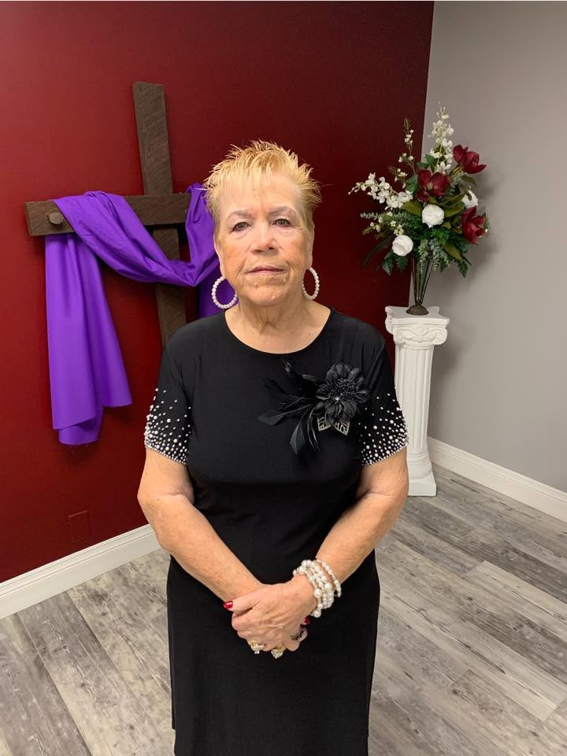
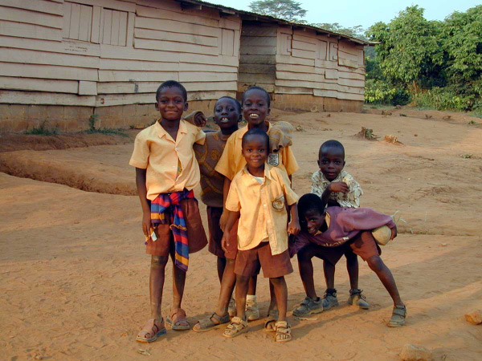
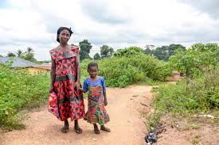
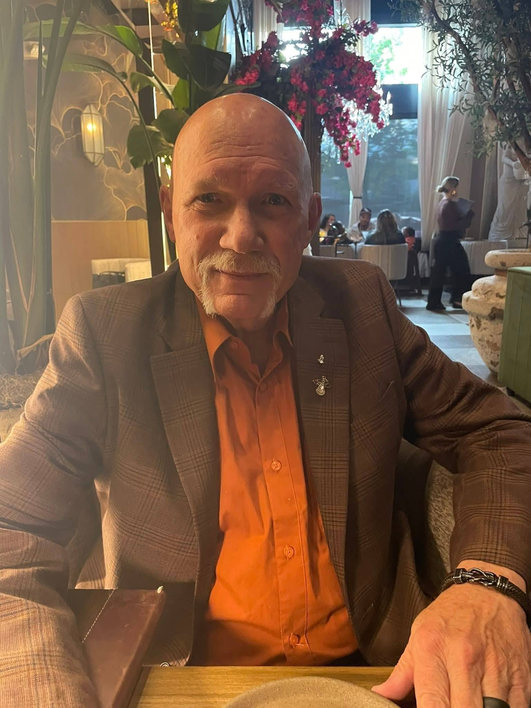

Bishop Mary Everding

Founder/Lead Pastor
The founder and lead pastor of Living Manna Ministries.OUR CHURCH HISTORY
After more than 20 years in ministry Bishop Mary Everding felt the distinct calling to establish Living Manna Ministries. The very first service was held on March 5, 2000. It was first housed for five months in her former residence at 1065 Cherry Lane, in Peru, IN.
Then a former church building at 851 N Broadway was rented to move the ministry. The Church remained at that address until July 2024: when Bishop Mary had purchased a new location at 83 E Third Street, which is where the church remains today.

Founder/Lead Pastor
The founder and lead pastor of Living Manna Ministries.In 2004 partnered with Bishop Frederick Nyarko Living Manna Ministries expanded to Ghana, Africa. February 2004, the first church and Living Manna Ministries of Ghana was established.


It has since grown into several churches, and established a day care along with an academic school which is teaching hundreds of children. There is also specialized trainng for leaders earning degrees in Theology at the Living Manna Training Center. We are also presently building an orphanage which is near completion.
Sound Engineer and Assistant Pastor
The sound engineer and assistant pastor of Living Manna Ministries.Bishop
Bishop of Living Manna Ministries in Ghana, AfricaBishop Frederick Nyarko and his hard working colleagues have done a tremendous work with his leadership and the Holy Spirit. Bishop Fredrick and Bishop Mary have an incredible relationship with the Lord to guide their steps.
The Lord has been faithful and truly blessed with expansions, provisions for the numerous ministries. Our prayer is that we remain faithful until his soon arrival!
Assistant Pastor/Music Director
The assistant pastor and music director of Living Manna Ministries.
Usher/ Assistant sound engineer
The usher and assistant sound engineer of Living Manna Ministries.
Faith can move Mountains